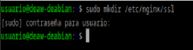
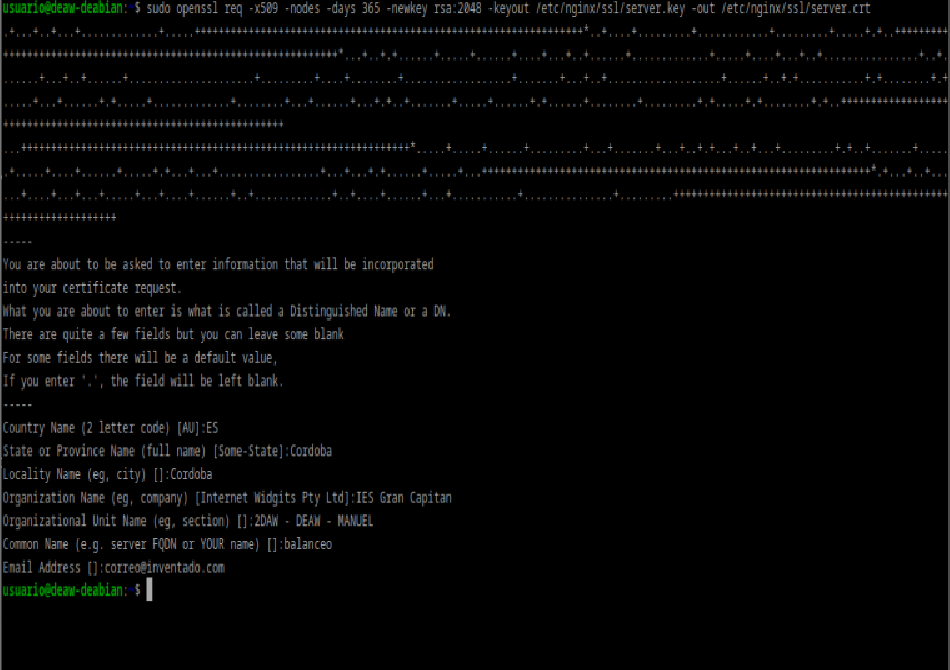
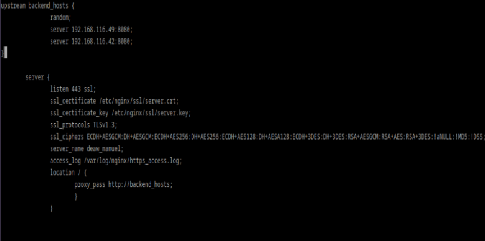
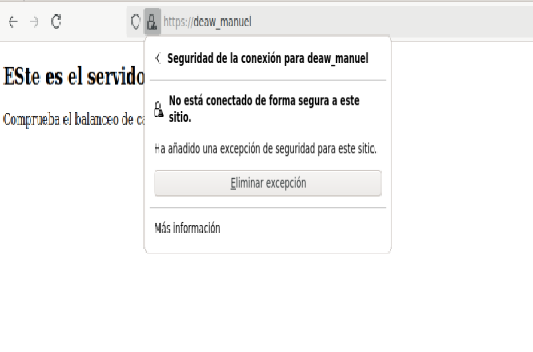
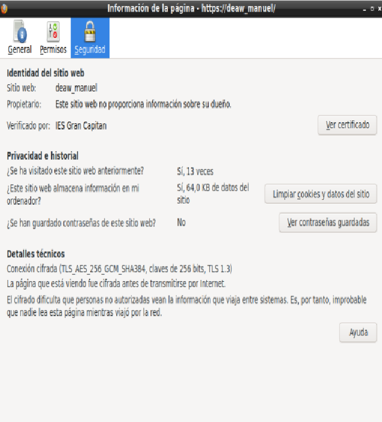
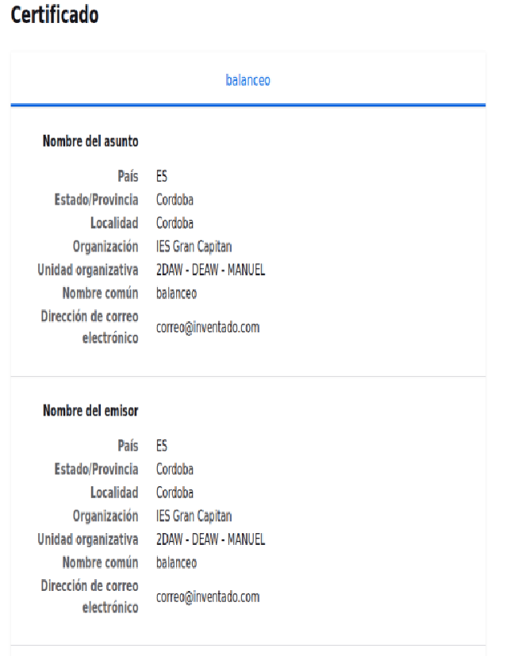
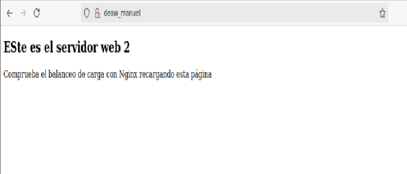
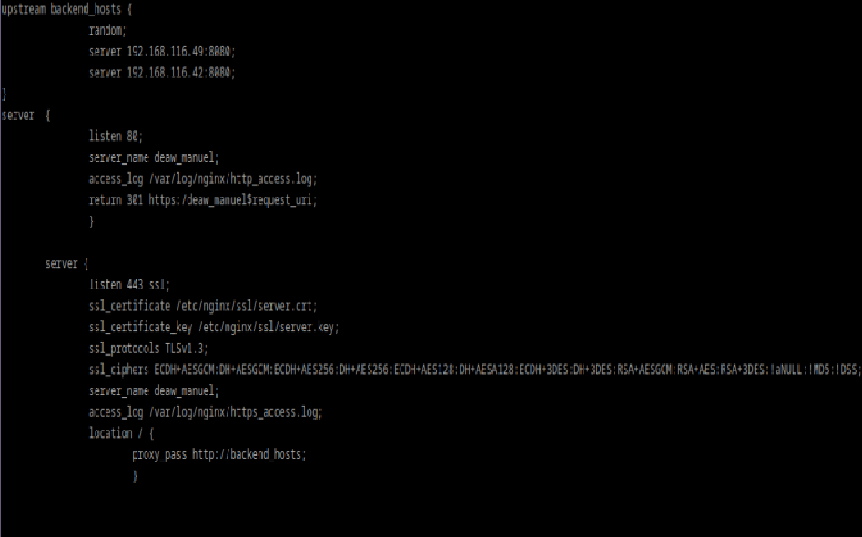
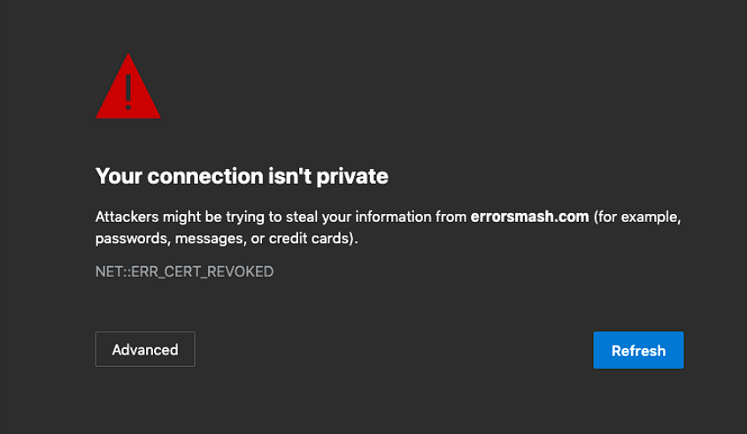

PRÁCTICA 2.5: Proxy inverso y balanceo de carga con SSL en NGINX
Creacíon de la clave y certificado ssl
En primer lugar crearemos el directorio donde guardaremos la clave y el certificado ssl dentro de nuestro servidor nginx:

y con el siguiente comando lo crearemos, e iremos rellenando los campos que nos pidan:

Configuración de SSL en el proxy inverso
Nos dirigimos hacia el archivo de configuración de balanceo, creado en la práctica anterior, y añadimos las siguientes líneas:

Además hemos cambiado el puerto de escucha (anteriormente 80) a 443, que es el puerto predeterminado de HTTPS.
Comprobaciones
Nos dirigimos hacia https:/deaw_manuel, a lo cual el navegador nos dará el siguiente aviso de seguiridad:

Si pinchamos en más información se nos abrirá la siguiente ventana:

Y presionamos sobre "Ver certificado", para ver los siguientes detalles:

Si en este momento intentamos acceder a la página mediante el protocolo http, se nos muestra la página aparentemente normal:

Pero en realidad no se está realizando el balanceo, ya que no se ha redirigido a el HTTPS, lo cual arreglaremos a continuación.
Redirección forzosa a HTTPS
Para conseguirlo, crearemos un nuevo apartado server dentro del archivo de configuración ya mencionado, y añadiremos lo siguiente:
 Nota: La imagen la tomé antes de añadir una llave al final "}" lo cuál me generaba un error.
La redirección 301 es un código o comando insertado por un Webmaster que permite redirigir a los usuarios y buscadores de un sitio web de un sitio a otro.
Es decir, lo que estamos haciendo es que cuando se reciba una petición HTTP (puerto 80) en http://balanceo, se redirija a https://balanceo (HTTPS)
Cuestiones Finales
Cuestión 1
Hemos configurado nuestro proxy inverso con todo lo que nos hace falta pero no nos funciona y da un error del tipo This site can't provide a secure connection, ERR_SSL_PROTOCOL_ERROR.
Dentro de nuestro server block tenemos esto:
server {
listen 443;
ssl_certificate /etc/nginx/ssl/enrico-berlinguer/server.crt;
ssl_certificate_key /etc/nginx/ssl/enrico-berlinguer/server.key;
ssl_protocols TLSv1.3;
ssl_ciphers ECDH+AESGCM:DH+AESGCM:ECDH+AES256:DH+AES256:ECDH+AES128:DH+AES:ECDH+3DES:DH+3DES:RSA+AESGCM:RSA+AES:RSA+3DES:!aNULL:!MD5:!DSS;
server_name enrico-berlinguer;
access_log /var/log/nginx/https_access.log;
location / {
proxy_pass http://red-party;
}
}
Se puede deber a que no se han creado adecuadamente los certificados ssl de la web.
Cuestión 2
Imaginad que intentamos acceder a nuestro sitio web HTTPS y nos encontramos con el siguiente error:

Investigad qué está pasando y como se ha de solucionar.